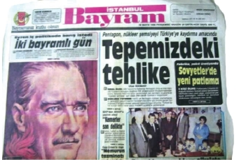

Bir “Zalak Mahmut” vardı ki evlere şenlik, karısı Neriman bizim Mahmut’un dört beş misli büyüklüğündeydi. Düşmanı “Eko” adında biri vardı ve Mahmut’un ondan ödü kopardı. Eko boyuna çıldırır, etrafında elektrik çarpması gibi bir şeyler olurdu. Durmadan “Hacamat” etmekten bahsederdi.
Tommiks-Teksas: Bu konuyu açarken, daha önceden de arkadaşlarıma dediğim bir şeyi buraya düşmeyi bir borç bilirim. Tezime göre; benim yaşımda olup, Tommiks-Teksas, Gır Gır ya da Fırt okumayan, Ahmet Kaya dinlemeyen yoktur. Buna yürekten inanıyorum. O şarkıda söylenir ya hani, “Şunu yapmadıysan, bunu etmediysen...” diye başlayan “Öyleyse hiç sevmemiş, sevilmemişsin gönül sen” diye, benim için de seksenleri yaşamak demek, bu yukardakilerle ilgili olmak demektir.
Konumuza dönelim, bu başlık esasında konuyu toparlamak için atılmış bir başlıktır. Bunun altında Zagor, Kaptan Swim, Yüzbaşı Volkan, Mister No, Fantom, Mandrake, belki Barbar Conan gibi zamanın önde gelen çizgi romanları vardır. Bü isim aslında, anne babalar tarafından bir genelleme yapılmak üzere konulmuştur. Nasıl, bilgisayar kullananlara “Atari mi oynuyorsun?” diye soruluyorsa, bu tür kitap okuyanların hemen hepsine de, “Tommiks Teksas mı okuyorsun?” diye sorulurdu.
Benim de en fazla okuduğum Tommiks idi. Nedendir bilmem, ona karşı ilgim, hikayelerine merakım hepsinden fazla olmuştu. Diğerlerinden o kadar zevk almazdım, ama Tommiks’in maceralarını kaçırmamaya özen gösterirdim.
Tommiks’i yetiştiren iki adam, Doktor ve Konyakçı adlarında iki sefil görünüşlü ihtiyardı. Bu adamlar, Tommiks’ten sonra, o hallerine bakmadan, batının en hızlı ve isabetli ateş edebilen adamlarıydılar. Her ikisi de her macerada birbirinden güzel işler yapar, boş kaldıkları her anı da alkol alarak, (konyak içerek) geçirirlerdi. Kızılderililer’in Ateş Suyu, onların da konyaklarından bıkmıştım aslında.
Tommiks, sürekli peşinde koştuğu ancak hiçbir zaman açılamadığı Suzi’inin yanında hep kızarırdı. O derece güzel ateş eder ve hiç kimseyi öldürmezdi. Düşmanlarını hemen her zaman silahlarından ya da ellerinden vurarak etkisiz hale getirirdi.
Tercümesi yapılırken çok orijinal şeyler çıkardı ortaya, “hay bin kunduz, melun rangerler, Türk gibi güreşmeyi bilmiyorsunlar ve daha onlarcası...
Bu yukarıda sayılan karakterler haricinde, Binbirsurat, Albay Brown, (ki Suzi’nin babasıdır,) Gennaro Esposito ve Tommiks’in atı Napolyon unutulmaması gereken karakterler arasındadır. Tommiks’in neden yıllarca yüzbaşılıkta kaldığı kafayı yormayı gerektiren bir şey midir? Anlamış değilim.
Bu çizgi romanların ortak bir özelliği vardır. Dövüşme, silah sesi, kafada şişe kırılması, Kızılderili bağırışları, kılıç hamlesi ya da yumruğun boşa gitmesi gibi ses efektleri vardır. Mesela boşa giden bir yumruk, şu sesi çıkarır, “swim”, kafaya yenilen bir tahtadan, “çtong” diye bir ses çıkar. “Bang” yine gürültülü bir kafaya vurma ya da silah sesidir. Kızılderililerin çıkardığı savaş sesleri de tuhaftır.
Turgut Nereden Koşuyor: Gazeteci Emin Çölaşan tarafından kaleme alınan bu kitap, on yılın kitap olayıydı. Özal siyaset sahnesine yeni çıkmış, aldığı oyla tek başına iktidar olmuştu. Renkli kişiliği, geçmişte aldıgı devlet görevlerindeki tavırları ile hemen herkesin merak ettiği bir durumdaydı. Mizah dergilerinde her zaman başrol ona verilirdi. Bu kitap, onu tanıtan o zamana kadarki en geniş çaplı eserdi. Bu vesileyle, seven, sevmeyen herkesin ilgisini çekmişti. Bu kitabı almak, günün modası haline gelmiş, hatta öyle ki, almamış olanlar bundan utanır olmuştu.
Bayram Gazetesi: Yılda iki defa, “Kurban ve Ramazan” bayramlarında olmak üzere, diğer gazetelerden hiçbiri yayın yapamaz, sadece “Bayram Gazetesi” denen ve Gazeteciler Cemiyeti tarafından basılan ve geliri buraya kalan bir gazete çıkardı. İyi bir tutum muydu, değil miydi hâlâ da tereddüt ettiğim bir olaydır. Gerçi, çeşitli gazetelerdeki, belki de birbirini hiç beğenmeyen gazetecileri bir arada görmek hoştu. Onu söylemek lazım.

Nihayetinde Sabah gazetesinin gayretleri ile son bulmuş bir gelenektir. Yılını hatırlamıyorum, ancak bir bayram sabahı bayilerde Sabah’ın yerini almasıyla birlikte diğer gazeteler de yayına başlamış ve Bayram Gazetesi ortadan kalkmıştır.